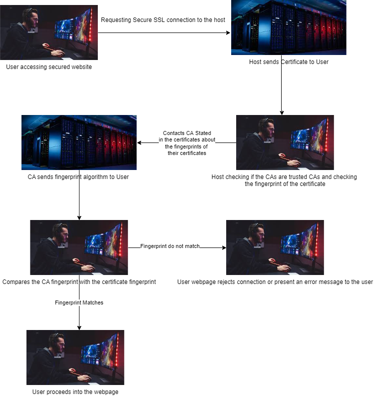

1
HTTPS stands for HyperText Transfer Protocol Secure, this format of web connection is now a standard protocol for websites rather than using an HTTP format. Prior to the HTTPS model, the HTTP model was easily subjected to MITM attacks, attacks in which the attacker acts as the middle man between the user and the web page, collecting data of the users without the users knowing they exist. Similarly to MITM attacks, the ghost kitchens concept which the famous Beast Burger brand adopts also demonstrates how a man in the middle can interact without the user's acknowledgement. When Beast Burger consumers order a Beast Burger, they are actually unknowingly getting food from a kitchen in the back of a McDonald's, which serves as a ghost kitchen for the Beast Burger brand. However, the ghost kitchen model is non malicious and also a collaboration between the burger brand and the McDonald's, while MITM attacks is malicious and an attack against both the web page and the users. The difference between the older model of HTTP format and the now popular HTTPS model is the Secure
section in the HTTPS. The HTTPS model enhances the security and privacy of the users which connect to the website through the implementation of CAs. CAs, or certificate authorities, are organizations and companies that put their name on the line to confirm the legitimacy of the web pages after verifying with the webpage owners directly. They act as the man in the middle in the HTTPS model, but in a non-malice way. (GRC 2020) The webpages would present certificates given to them by these CAs to prove that they are the website the user is attempting to traverse, allowing the users to safely interact with the webpage. However, through using an HTTPS proxy appliance, proxies which interfere with the users traffic to log their traffic before connecting them to the desired web page by arranging one more pseudo certificate authority, schools, government agencies, and many others can track your history and crumble the security of HTTPS model. (WatchGuard 2020)
This may sound scary, and it is, but there have been solutions developed to counter this issue. Even though SSL interceptions cannot be prevented by normal methods, SSL interceptions can be detected and resolved reliably. An SSL interception can be detected through examination of the fingerprint of the certificate; if any change at all is done to the certificate, there is essentially a whole new fingerprint, cryptographic hash, to the certificate, meaning that the connection is being intercepted. These fingerprints are essentially algorithms that analyze the SSL Certificate contents. A good hash will change almost completely even when the SSL certificate content is changed by a little, to show that the fingerprint has changed. However, there are cases where a detection can be wrong. On one hand, False-Positive can occur when large websites hold multiple certificates for a series of webpages. (Knowledge Base 2021) Therefore, when people testing those websites see that they are getting the wrong SSL hash, it will lead them to conclude that their connection is being intercepted even though the website simply had multiple certificates.
On the other hand, False-Negative can occur when certain browser connections toward the website are not intercepted, therefore tricking those few to believe that all other connections are safe as well and ensuring others who's not testing the webpage connection that it is also secure for them. (GRC 2020) Even though eavesdropping on common citizens' daily internet usage sounds illegal, governments, schools and ISPs have a right to eavesdrop on your communication, as they aren't entering your property to obtain such conversations. We have to fight to protect our own rights against these institutions through being aware of our own connections and when something looks suspicious. To simplify the contents detailed above, here is a flowchart detailing how a HTTPS connection prevents connection proxies and middle man attacks.

About the HTTPS-Proxy. (2020). WatchGuard. https://www.watchguard.com/help/docs/help-center/en-US/Content/en-US/Fireware/proxies/https/https_proxy_about_c.html
Shields UP!! System Error. (2020). GRC. https://www.grc.com/x/URL_Error.htm#top
Understanding Hash Functions. (2021,June 22). Knowledge Base. https://www.thesslstore.com/knowledgebase/ssl-support/understanding-hash-functions/#:%7E:text=Hashing%20is%20mapping%20data%20of,purpose%20of%20hashing%20is%20authentication.
Gamer using a PC. (2021,April 30). [Photograph]. Avast. https://encrypted-tbn0.gstatic.com/images?q=tbn:ANd9GcRPtD6RGQg27fXxuFK8gf2ZcBrD7A0JerAakA&usqp=CAU
Server Hosts. (2022, February 9). [Photograph] Cheapest Dedicated Server Hosts for 2022. https://www.hostingadvice.com/wp-content/uploads/2022/01/Cheapest-Dedicated-Server-Hosts.jpg